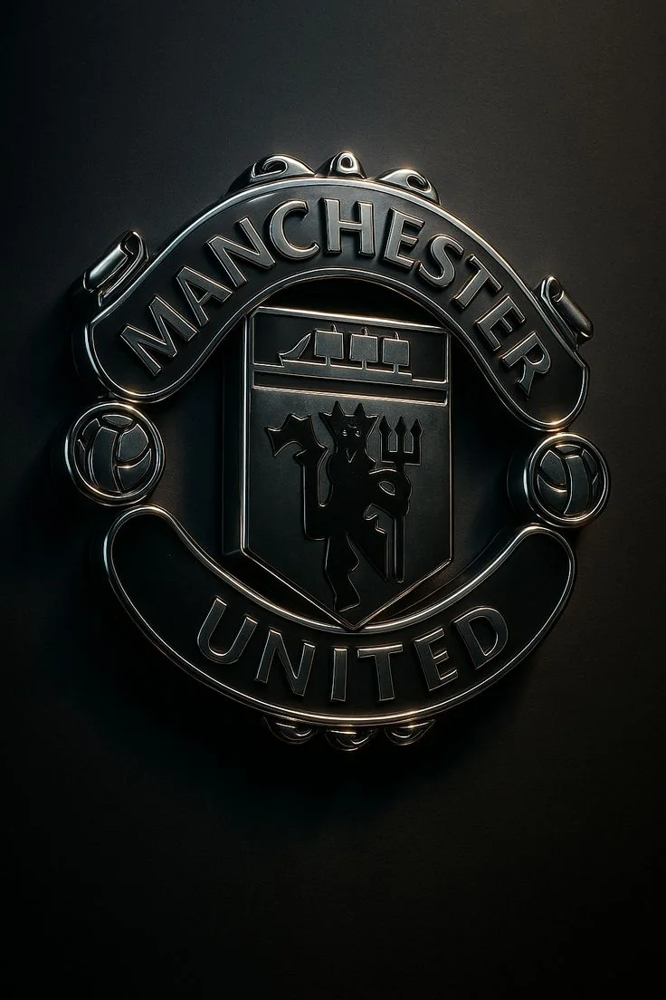
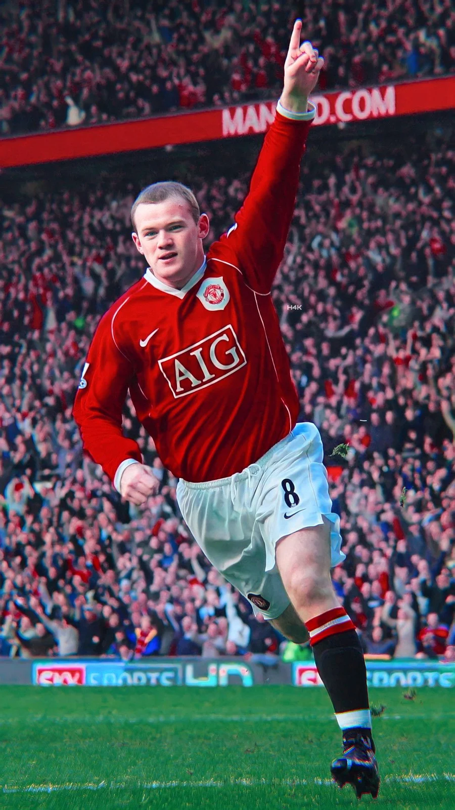
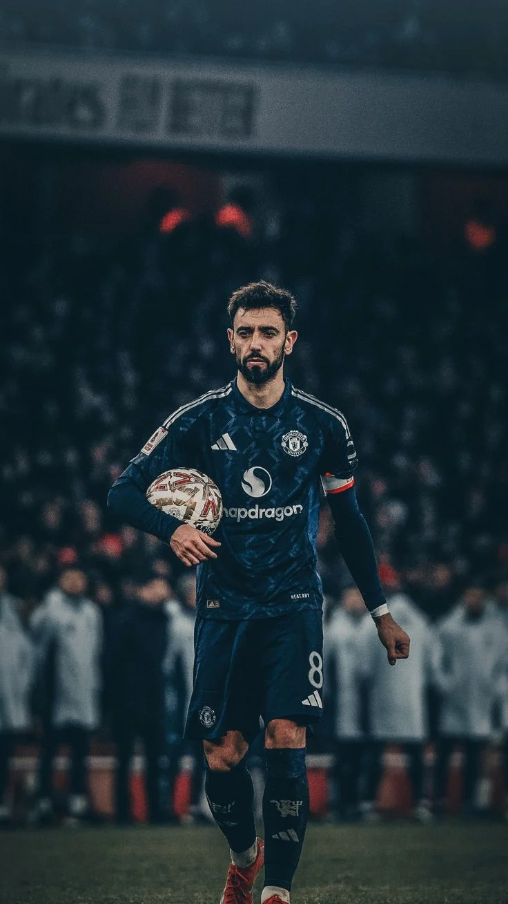
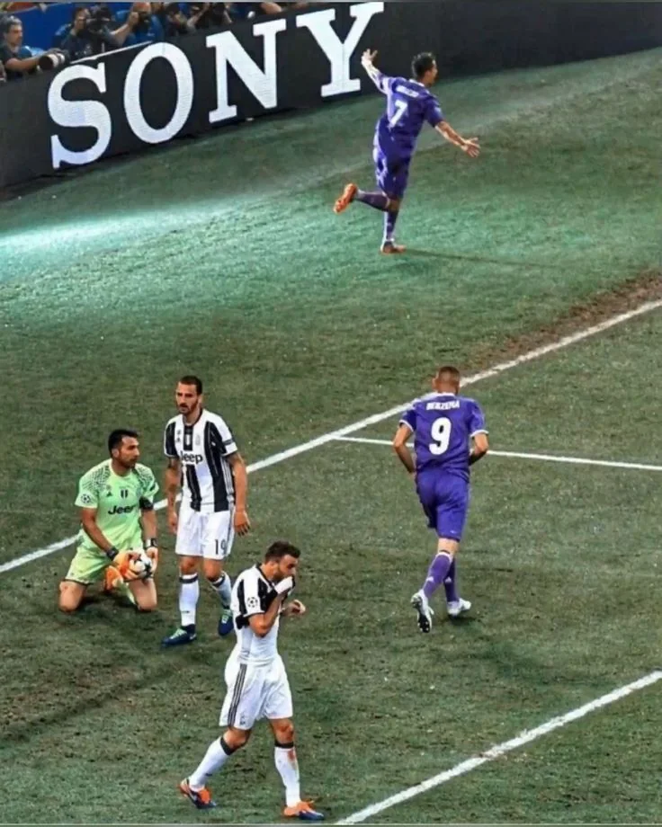
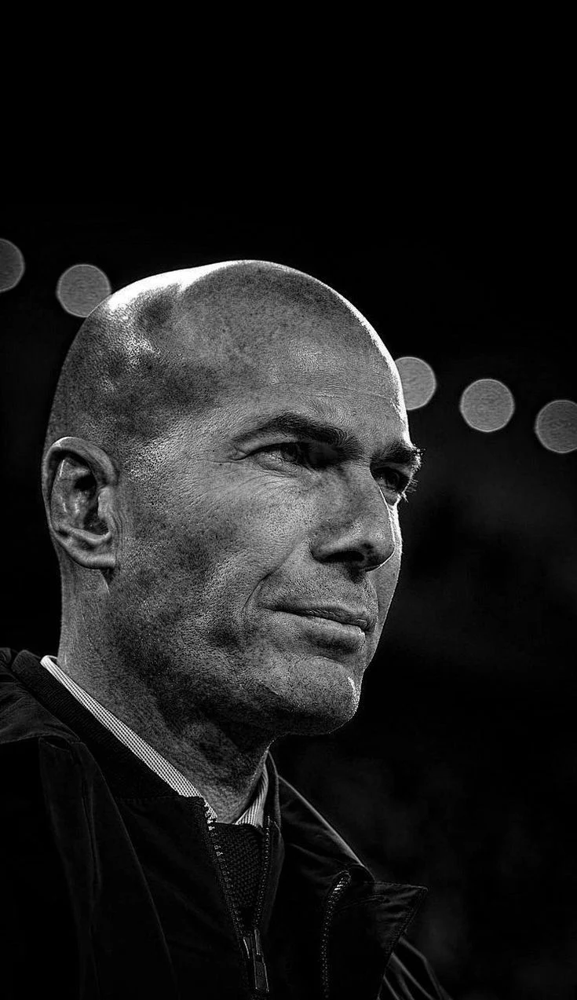

Gospel & Worship
Meskerem Getu · Tim Hughes
The foundation: faith, worship, big voices, and music that actually means something.
The part of the website where the resume stops talking.
Faith & Purpose
Honestly, I keep living, moving, and thriving because of Jesus. His grace is the ultimate foundation holding my life together—and I mean that in the most genuine, joyful way possible.
Faith first, then pop, soul, grime, jazz, and whatever else survives the shuffle.
Gospel & Worship
The foundation: faith, worship, big voices, and music that actually means something.
Pop · Funk · R&B
Big hooks, funk, R&B, ridiculous stage presence, and songs that refuse to age.
Soul · R&B · Neo-Soul
Soulful R&B, neo-soul, jazz-pop, and the slower side of the playlist.
Grime · Hip-Hop
UK grime and hip-hop, with Gospel never too far away.
Jazz · Ethio-Jazz
Jazz meets Ethio-jazz—the part of the playlist where instruments get to do the talking.
You will not catch me anywhere near a gym bench. Maybe in 2019/27.
Give me my AirPods and a ridiculously long walk instead.
If you need proof I actually move, you can find me on Strava.
View My StravaThe quickest way to my heart
Fresh, hot Difo Dabo is already a serious security vulnerability. Add Tire Siga (Ethiopian raw meat) to the equation and we are no longer discussing reasonable decision-making.
Dark rooms, impossible choices, complicated people, and an unreasonable respect for a perfect opening scene.
The one. My all-time favorite.
A first-watch experience I would take again without hesitation.
Conviction under pressure, with no room for half measures.
Yes, all four count as one. No, that is not cheating.
One of the best. The atmosphere alone makes the case.
Honorable mention.
Behind the Camera
Denis Villeneuve · Martin Scorsese · Steven Spielberg · David Fincher
If one of these names is behind the camera, I am probably seated.
In Front of It
Denzel Washington · Robert De Niro · Al Pacino · Leonardo DiCaprio · Christian Bale · Brad Pitt
The Women
Viola Davis · Meryl Streep · Julia Roberts
Julia takes the top spot for me.
Scenes Living Rent-Free
One More First Watch
Movie
The Godfather Part I
Series
Prison Break
Series
Favorite Series
How I Met Your Mother
Best Turkish Series
İcerde
Currently Watching
Yeraltı
Manchester United first. Cristiano forever. Real Madrid arguments available on request.

The First Team
My dad introduced me to United when I was five or six. It stuck.

All-time United favorite
Wayne Rooney

Current favorite
Bruno Fernandes
My GOAT
His entire career is a blueprint for what a human being can achieve through sheer force of will. He was not born with the ultimate footballing blueprint; he built it in the gym, on the training pitch, and in his own mind. When you look at Ronaldo, you do not see a divine miracle. You see discipline. You see suffering. You see a man who decided he would not let anyone—not even nature—limit how great he could be.
My Favorite CR7 Era

Cardiff · 2017
Favorite player outside United
Jude Bellingham

Favorite manager
Zinedine Zidane
Argue With the Wall
Argue with the wall.
I low-key wish I never had to get married, but if it is an absolute must, it is happening at the Mandarin Oriental, Lago di Como, Italy.
No negotiation.